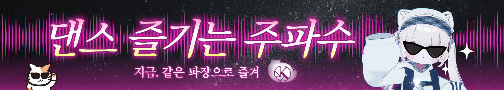

VRChat 퍼포먼스와 영상 제작을 위한 AvatarPoseLibrary 오디오 피치 싱크 확장 패치입니다.
포즈별 오디오 재생 및 Motion Speed 기반 실시간 Audio Pitch Sync를 지원합니다.
Audio pitch synchronization extension patch for AvatarPoseLibrary designed for VRChat performances and cinematic production.
Supports per-pose audio playback and realtime Motion Speed based audio pitch sync.
https://3minn.github.io/AvatarPoseLibrary/packages.json